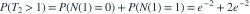

齐次泊松过程速率为每小时2次，第二次到达时刻为  。
。 为？
为？
。 为？- A

- B

- C

- D
我已思考，展开答案与解析
正确答案：C
- 第二次尚未到达等价于一小时内计数至多1。

。- 也可用形状2、速率2的Gamma等待时间计算。
易错提醒T₂>1对应计数少于2，不是计数恰好2。
Ross · 概率模型专题 · Ross第5.3.3节 Interarrival and Waiting Time Distributions
按Ross教材公开目录所列知识主题原创；未逐字摘录原书习题。
查看参考来源